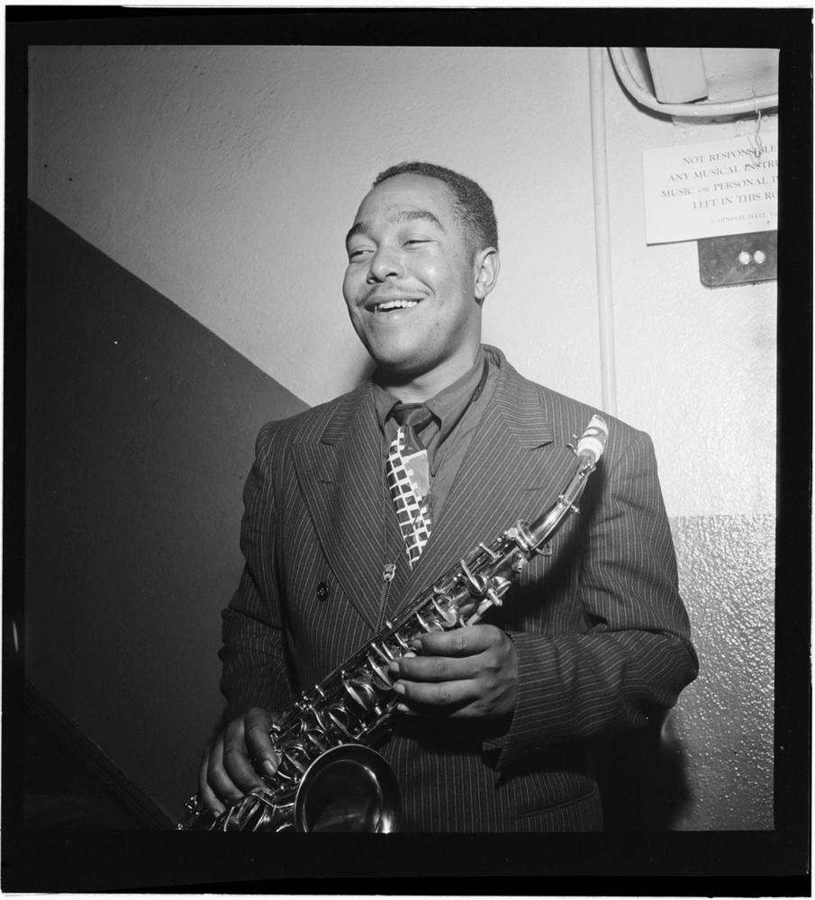
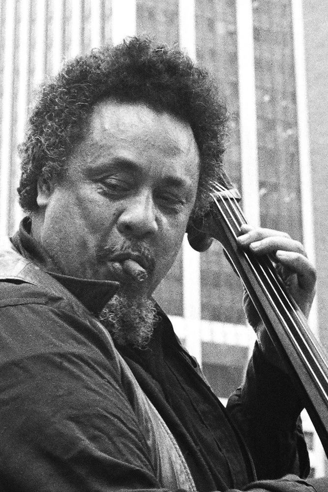

故事
1953 年，史上最強的五人陣容同台，觀眾席卻空了一大片。地點是加拿大多倫多的 Massey Hall。台上有 Charlie Parker、Dizzy Gillespie、Bud Powell、Charles Mingus 和 Max Roach。
偏偏同一晚，電視在轉播一場重量級拳王賽。據說很多人留在家裡看拳擊，票只賣出一小部分。據說中場休息時，Dizzy 還跑去看比數。

Mingus 把這場錄了下來，用自己的唱片公司發行。因為合約問題，Parker 在唱片上用了假名 Charlie Chan。這張唱片，後來常被稱為最偉大的爵士現場之一。收藏起來，下次聽 Jazz at Massey Hall，想想那些在家看拳擊的人。
故事後面
這場演出由多倫多的新爵士協會主辦，原本想用一個超級陣容打響名號，結果票房慘淡，據說連樂手的酬勞都差點發不出來。
Mingus 事後覺得自己的貝斯在錄音裡太小聲，回到紐約重新錄了一部分貝斯疊上去，才交給自己和 Max Roach 合開的唱片公司發行。
這也是 Charlie Parker 和 Dizzy Gillespie 最後幾次同台之一。兩年後 Parker 過世，這張唱片成了 bebop 黃金陣容的告別合照。

這樣聽
聽 Dizzy 在曲子開頭喊出曲名，台下的笑聲和掌聲，就是那晚少少的觀眾。
逐句英文
In 1953 the strongest five-man lineup in history shared a stage, yet much of the hall sat empty.
The venue was Massey Hall in Toronto, Canada.
On stage: Charlie Parker, Dizzy Gillespie, Bud Powell, Charles Mingus and Max Roach.
That same night, TV was broadcasting a heavyweight title fight.
Reportedly many people stayed home to watch the boxing, and only a fraction of tickets sold.
Reportedly, at intermission Dizzy went off to check the score.
Mingus recorded the show and released it on his own label.
Because of contract issues, Parker was credited under the alias Charlie Chan.
The record is now often called one of the greatest live jazz albums.
Save this. Next time you play Jazz at Massey Hall, think of the people who stayed home for the fight.
查證筆記與出處
觀眾人數各來源說法不一（約七百到一千多人），稿裡不寫數字；Dizzy 跑去看比數是軼事，寫據說。Mingus 與 Max Roach 合開的 Debut 唱片，稿裡只寫「自己的唱片公司」。
https://en.wikipedia.org/wiki/Jazz_at_Massey_Hall
https://en.wikipedia.org/wiki/Massey_Hall
https://en.wikipedia.org/wiki/Rocky_Marciano_vs._Jersey_Joe_Walcott_II
一分鐘影片版在 Instagram @jazz101tw。